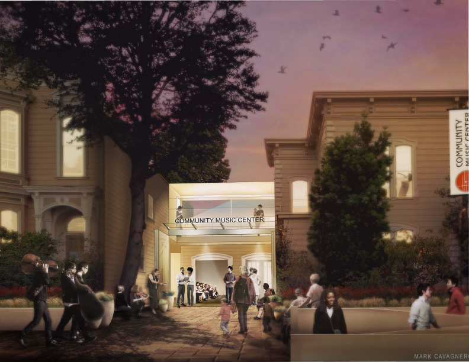

About
-

Biography
Lilly Lu
Growing up in church, music was often played. In 2014, I naively joined an orchestra class in middle school. Little did I know that music will boost my mental health and confidence. Currently, I am studying music at Community Music Center, I play the viola and piano.
Initially, my idea of creating a community art website (where people could upload their artwork) sparked. Through different thoughts, I decided to build this website for inspiration and motivation to others. Art is everywhere. Art extends and expands our shared common visual language.
-

Lowell
Lowell High School in San Francisco is a selective, public magnet school, with approximately 2,700 students. It opened in 1856 as the Union Grammar School and attained its current name in 1896. In 1962, Lowell moved to its current location, Merced Manor. It is the oldest public high school west of the Mississippi River. Lowell ranks #6 in California High Schools. In the fall of 2019, I will be in my junior year at Lowell High School.
-

Holberton
Summer Coding Camp
Prior to building this website, I had no coding experience. Throughout the first week of Holberton, I was given projects. The projects taught me how to use the basics of html, css, and javascript.